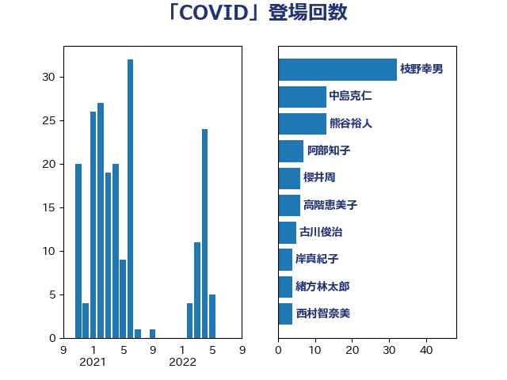

単語「COVID」

| 枝野幸男 | 立憲民主党 | 32 回 |
| 中島克仁 | 立憲民主党 | 13 回 |
| 熊谷裕人 | 立憲民主党 | 13 回 |
| 阿部知子 | 立憲民主党 | 7 回 |
| 櫻井周 | 立憲民主党 | 6 回 |
| 高階恵美子 | 自由民主党 | 6 回 |
| 古川俊治 | 自由民主党 | 5 回 |
| 岸真紀子 | 立憲民主党 | 4 回 |
| 緒方林太郎 | 無所属 | 4 回 |
| 西村智奈美 | 立憲民主党 | 4 回 |
| 吉田統彦 | 立憲民主党 | 3 回 |
| 海江田万里 | 立憲民主党 | 3 回 |
| 福田昭夫 | 立憲民主党 | 3 回 |
| 倉林明子 | 日本共産党 | 2 回 |
| 吉良よし子 | 日本共産党 | 2 回 |
| 後藤茂之 | 自由民主党 | 2 回 |
| 比嘉奈津美 | 自由民主党 | 2 回 |
| 玄葉光一郎 | 立憲民主党 | 2 回 |
| 田村憲久 | 自由民主党 | 2 回 |
| 亀岡偉民 | 自由民主党 | 1 回 |
| 井坂信彦 | 立憲民主党 | 1 回 |
| 務台俊介 | 自由民主党 | 1 回 |
| 古賀之士 | 立憲民主党 | 1 回 |
| 和田政宗 | 自由民主党 | 1 回 |
| 大口善徳 | 公明党 | 1 回 |
| 川田龍平 | 立憲民主党 | 1 回 |
| 打越さく良 | 立憲民主党 | 1 回 |
| 早稲田ゆき | 立憲民主党 | 1 回 |
| 末松義規 | 立憲民主党 | 1 回 |
| 杉本和巳 | 日本維新の会 | 1 回 |
| 村井英樹 | 自由民主党 | 1 回 |
| 柳ヶ瀬裕文 | 日本維新の会 | 1 回 |
| 柴田巧 | 日本維新の会 | 1 回 |
| 梅村聡 | 日本維新の会 | 1 回 |
| 森屋宏 | 自由民主党 | 1 回 |
| 浅田均 | 日本維新の会 | 1 回 |
| 浜田聡 | NHK党 | 1 回 |
| 猪口邦子 | 自由民主党 | 1 回 |
| 田名部匡代 | 立憲民主党 | 1 回 |
| 石垣のりこ | 立憲民主党 | 1 回 |
| 石川大我 | 立憲民主党 | 1 回 |
| 福島みずほ | 社会民主党 | 1 回 |
| 羽生田俊 | 自由民主党 | 1 回 |
| 自見はなこ | 自由民主党 | 1 回 |
| 近藤和也 | 立憲民主党 | 1 回 |